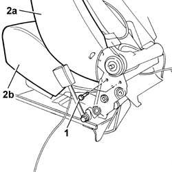
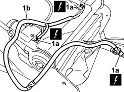

7045G38 FRONT SEAT (LEFT/RIGHT) BACK LUMBAR ADJUSTMENT SYSTEM CABLE HARNESS - R.R. OR REPLACE
- Path
- Procedures > 70 FITTINGS > 7045 FRONT SEATS > 7045G FRONT SEAT LUMBAR ADJUSTMENT ELECTRIC MOVEMENTS > 7045G38 FRONT SEAT (LEFT/RIGHT) BACK LUMBAR ADJUSTMENT SYSTEM CABLE HARNESS - R.R. OR REPLACE
- Kind
- repair procedure (removal / refitting; the operation number is the code)
- Applies to
- all engines; all production periods
- Interactive page
- https://sloeber94.github.io/elrnDB-lThss/en/#/841003014
Applies to: all engines; all production periods
 Removing
Removing
 Refitting
RefittingDisconnect the negative battery terminal.
Op. 7045A10 L/H OR R/H FRONT SEAT (ONE) - R+R
Applies to: all engines; all production periods
1. Undo the bolts securing the backrest to the cushion on both sides.
2. Separate the backrest (2a) from the cushion (2b).

Applies to: all engines; all production periods; only with equipment: Comfort Seats
Op. 7045N12 FRONT CUSHION FRONT FAN - R.R. WITH SEAT REMOVED
Applies to: all engines; all production periods
Release the cable loom from the retaining bands.
1. Disconnect the electrical connections (1a) for the heater pad, the cooling fan, the head restraint adjustment motor and the front backrest lumbar adjustment motor and the coupling with the cushion and remove the cable loom (1b).
Description | Connector | |
|---|---|---|
1a | Right front backrest cushion coupling | D134 |
Description | Connector | |
|---|---|---|
1a | Left front backrest cushion coupling | D133 |
Description | Connector | |
|---|---|---|
1a | Left front backrest heater pad | O048 |
Description | Connector | |
|---|---|---|
1a | Right front backrest heater pad | O049 |
Description | Connector | |
|---|---|---|
1a | Left front seat head restraint motor | N131 |
Description | Connector | |
|---|---|---|
1a | Right front seat head restraint motor | N134 |
Description | Connector | |
|---|---|---|
1a | Left front seat lumbar adjustment motor | N038 |
Description | Connector | |
|---|---|---|
1a | Right front seat lumbar adjustment motor | N133 |

Applies to: all engines; all production periods
Refitting
RemovingConnect the electrical connections for the heater pad, the cooling fan, the head restraint adjustment motor and the front backrest lumbar adjustment motor and the coupling with the cushion and remove the cable loom.
Description | Connector | |
|---|---|---|
- | Right front backrest cushion coupling | D134 |
Description | Connector | |
|---|---|---|
- | Left front backrest cushion coupling | D133 |
Description | Connector | |
|---|---|---|
- | Left front backrest heater pad | O048 |
Description | Connector | |
|---|---|---|
- | Right front backrest heater pad | O049 |
Description | Connector | |
|---|---|---|
- | Left front seat head restraint motor | N131 |
Description | Connector | |
|---|---|---|
- | Right front seat head restraint motor | N134 |
Description | Connector | |
|---|---|---|
- | Left front seat lumbar adjustment motor | N038 |
Description | Connector | |
|---|---|---|
- | Right front seat lumbar adjustment motor | N133 |
Secure the wiring to the retaining bands.
Op. 7045N12 FRONT CUSHION FRONT FAN - R.R. WITH SEAT REMOVED
- Fit the backrest on the cushion and tighten the fixing bolts on both sides.
Op. 7045B08 FRONT HEAD RESTRAINT PINS - R R
Op. 7045B10 L/H OR R/H FRONT SEAT HEAD RESTRAINT - R+R
Op. 7045A10 L/H OR R/H FRONT SEAT (ONE) - R+R
Connect the negative battery terminal.
Topics linked from this page (5)
- 7045A10 FRONT SEAT (one) left or right - R.R.
- 7045B08 Front seat head restraint pins - R.R.
- 7045B10 l/h or r/h front seat HEAD RESTRAINT - r+r
- 7045N12 FRONT CUSHION FRONT FAN - R.R. WITH SEAT REMOVED
- 7045N15 FRONT SEAT BACK MASSAGE/LUMBAR ADJUSTMENT DEVICE PUMP (1), LEFT OR RIGHT - R.R. WITH SEAT REMOVED